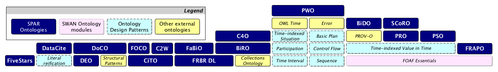
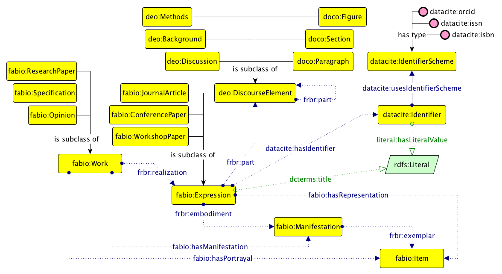
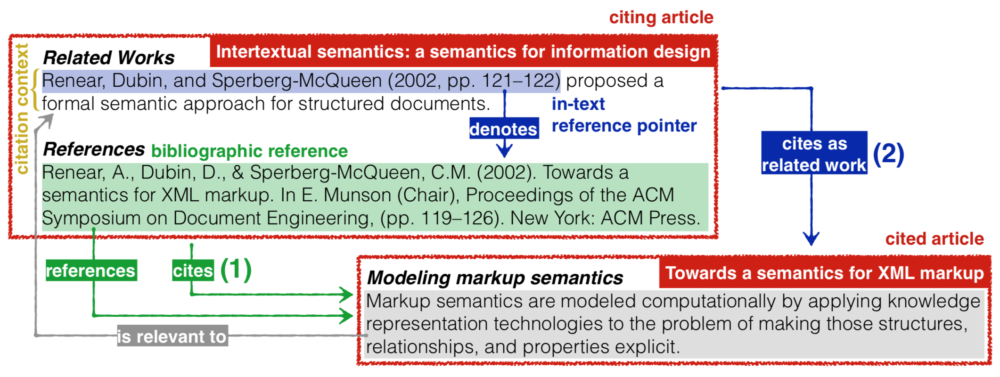
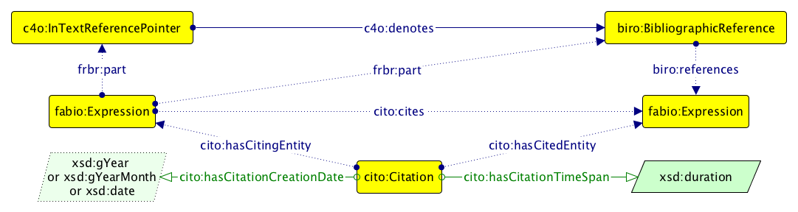
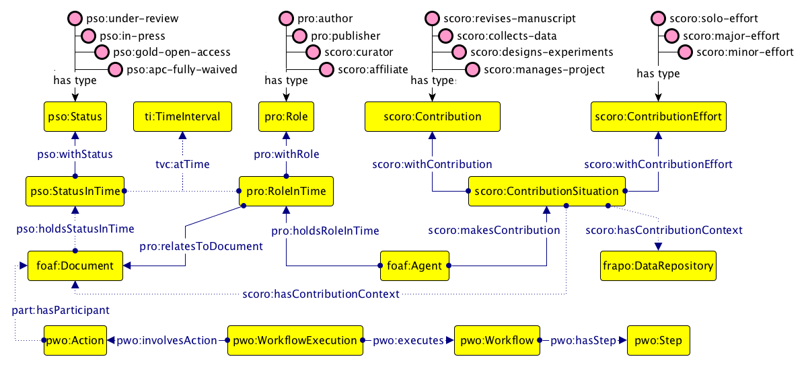
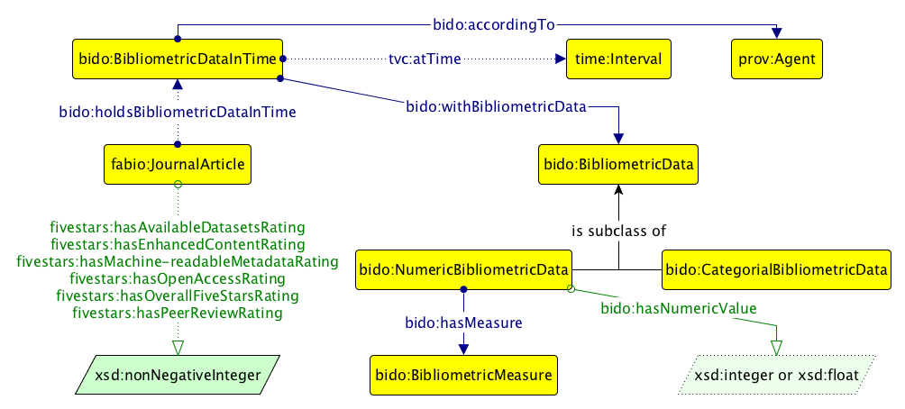
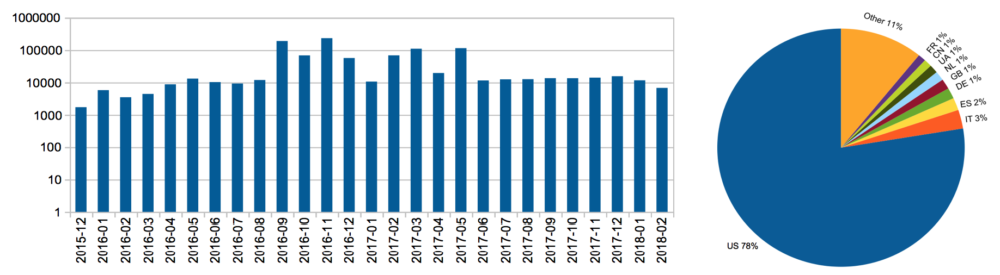
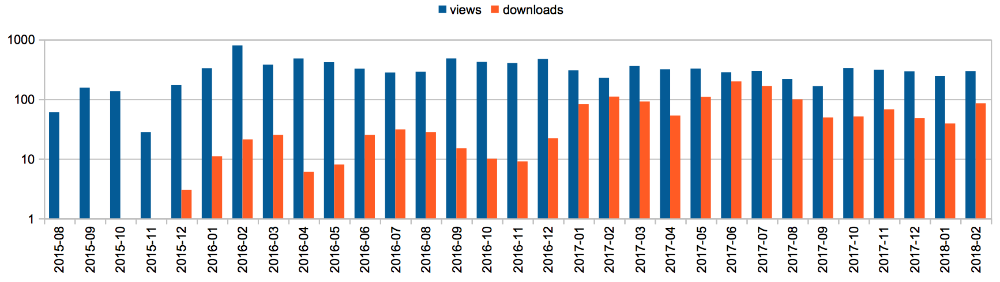

Over the past eight years, we have been involved in the development of a set of complementary and orthogonal ontologies that can be used for the description of the main areas of the scholarly publishing domain, known as the SPAR (Semantic Publishing and Referencing) Ontologies. In this paper, we introduce this suite of ontologies, discuss the basic principles we have followed for their development, and describe their uptake and usage within the academic, institutional and publishing communities.
The last decade has seen a new evolutionary step in scholarly publishing that has drastically changed the way of publishing and sharing research information. This is the use of Web and Semantic Web technologies for making published entities such as articles and scientific data machine-readable and easier to discover, browse and interact. Researchers in the field refer to it using the name Semantic Publishing. This movement has actively involved people from both academia and industry, including (a) publishers such as Springer Nature (https://www.springernature.com), Elsevier (https://www.elsevier.com) and F1000 (https://f1000.com), (b) institutions for the assessment of the quality of research such as the Italian National Agency for the Evaluation of Universities and Research Institutes (http://www.anvur.it), and (c) broad academic communities such as Force11 (https://www.force11.org) and Linked Research (https://linkedresearch.org), all united in the goal of changing and improving the current practices of research communication.
While the invention of print permitted the written recording of scientific discoveries, the advent of the Web has allowed researchers and publishers to increase drastically their visibility by means of new communication channels and electronic publications. Semantic Publishing additionally brings machines (software agents, intelligent interfaces, Semantic Web reasoners, etc.) into the game. The more that scholarly data (e.g. metadata of scholarly publications, their associated research data, and the experimental and computational workflows employed in the research) are available in machine-readable forms, the more those involved in the whole scholarly communication domain – researchers, publishers, reviewers, readers – will benefit. Such benefits will involve increased visibility, findability of related research, and discoverability of previously unknown links between works that were not explicitly related by citations.
Providing scholarly data that can be easily parsed, processed and interpreted computationally is a matter of having expressive shared machine-processable descriptions on the Web. Semantic Web technologies such as RDF, RDFS, OWL, and SPARQL provide the main building blocks towards that goal. Such tools can be considered a formal, semantically-oriented interlingua for machines to express and query data. In 2010, when we started to work actively on this topic, what were missing were appropriately rich ontologies for enabling the accurate and reasonably expressive description of all aspects of the scholarly publishing domain.
Since then, our work in this area has been dedicated to the development of a set of complementary and orthogonal ontologies that can be used for the description of the main areas of this publishing domain, from the metadata of scholarly artefacts to the specification of the workflow processes that result in the publication of a scholarly bibliographic product. This work, described here, has resulted in the development of the SPAR (Semantic Publishing and Referencing) Ontologies (http://www.sparontologies.net), a suite of ontological modules enabling one to record the scholarly publishing domain using Semantic Web technologies. Previous publications describing one or more of the SPAR Ontologies are listed at http://www.sparontologies.net/publications.
The rest of the paper is organised as follows. In , we introduce other existing Semantic Web vocabularies and ontologies that have been used over the past decade or so for the description of (parts of) the publishing domain. In , we describe the design principles we have followed for the development of the SPAR Ontologies. In , we introduce each of the current SPAR Ontologies, clarifying their scope and highlighting their most significative aspects. In we show how external parties, including researchers, publishers and institutions, have used the SPAR Ontologies for describing bibliographic documents. Finally, in , we conclude the paper by sketching out some future work.
Existing models
Our work on the SPAR Ontologies was not the first effort to provide Semantic Web descriptions of the publishing domain. The Dublin Core Metadata Terms (DCTerms) is among the first international standards to describe bibliographic information on the Web. Going further than DCTerms is the Functional Requirements for Bibliographic Records (FRBR) , a relatively recent specification made by the International Federation of Library Association and Institution, that models the concept of a bibliographic entity according to four different but closely-related point of views called work (the conceptual idea), expression (the content), manifestation (the format), and item (the tangible object). These models, actively used today with others of similar kind including the Publishing Requirements for Industry Standard Metadata (PRISM) , should be considered top-level vocabularies rather than something developed to characterise specific aspects of scholarly publishing. Thus all of them lack the concepts of journal article, book chapter, conference paper, reference list, citation, editor and similar entities that are useful for describing the scholarly publication world in detail. Furthermore, they were not developed with the RDF / OWL data model in mind, but rather as merely documental specifications, although Semantic Web implementations of them have been provided in recent years.
While past proposals exist for the adoption of semantic technologies for the scholarly publishing domain (e.g. ScholOnto ), the AKT Reference Ontology (AKTRO) should probably be listed as the first ontology specifically developed by means of Semantic Web technologies for describing this domain. Originally developed in OCML and then converted in OWL (http://lov.okfn.org/dataset/lov/vocabs/akt), it provides a set of classes and properties that allow the description of different kinds of publications and agents involved in the publishing process.
A first serious attempt towards providing an OWL-native scholarly-oriented publication ontology was the Bibliographic Ontology (BIBO) , which introduced the concepts of article, journal, conference proceedings, etc. While still in use today, it falls short of being sufficiently comprehensive, lacking for instance the concepts of dataset, blog post, citation function and publication workflow. Additionally, BIBO is a ‘flat’ ontology, so that the class bibo:AcademicArticle conflated the two concepts Research Paper (a conceptual Work) and Journal Article (an Expression of such a Work). Since then, several Semantic Web ontologies have been proposed for addressing the description of additional aspects of the publishing domain. Notable examples are the Semantic Web Journal (SWJ) ontology, the Semantic Web Conference (SWC) ontology (http://data.semanticweb.org/ns/swc/ontology), Semantically Annotated LaTeX (SALT) ontologies , the Nature Ontologies, the SciGraph Ontologies, and the Conference Ontology.
Along with these, several new OWL-based top-level models have been releases, that provide general vocabularies for referring to aspects of the scholarly and publishing domain. Among the most notable are the Resource Description and Access (RDA) OWL vocabularies and BIBFRAME (http://bibframe.org/vocab.rdf), which can be considered as an implementation of FRBR . BIBFRAME has been recently extended by bibliotek-o (https://bibliotek-o.org), developed as a supplement to the core BIBFRAME ontology.
Finally, several groups have started to propose larger and more complex Semantic Web ontologies for describing the publishing domain as a whole, instead of focussing on top-level concepts or a few specific aspects. Apart from the SPAR Ontologies, which are described in the following sections, some of the first attempts in this direction are those of the Semantic Web Applications in Neuromedicine (SWAN) project which proposed the SWAN biomedical discourse ontology, the VIVO Integrated Semantic Framework (VIVO-ISF)ontology (http://vivoweb.org/ontology/core), and the Semanticscience Integrated Ontology (SIO) – all of which align with some of the entities described in the SPAR Ontologies.
Development guidelines
In order to provide a set of ontologies to describe scholarly bibliographic information that built on our previous experience of developing the prototype Citation Typing Ontology (CiTO) , we started in 2010 to work on a comprehensive and complementary set of orthogonal OWL 2 DL ontologies that describe all the aspects of the publishing domain, namely the SPAR (Semantic Publishing and Referencing) Ontologies. The development process we followed complied with the following development principles (DP) that were derived after discussions with researchers and publishers.
DP1 - Enabling adoption: addressing actors’ requirements. The involvement of domain experts is good practice in any robust methodology for ontology design, since it allows the developer to gather information about the important aspects to model and also to employ the terminology used in real practice. Thus, a model developed for describing the publishing domain, which aims at being adopted broadly in the scholarly communications community, should strongly take into consideration all the actors involved in such domain (authors, editors, publishers, members of academic communities, etc.), their needs, and the vocabularies they use in their day-to-day work for referring to publishing things. Within the scholarly communication domain, this requirement is also currently being addressed by worldwide initiatives such as Metadata 2020 (see http://www.metadata2020.org/projects/definitions/).
DP2 - Enabling reuse: interoperable ontological modules. Organising comprehensive ontological descriptions of a field by the use of a set of smaller orthogonal ontology modules is recognised good practice in ontology design, since it improves the reusability of such modules in different contexts and across domains . For the SPAR ontologies, we thus developed several complementary ontological blocks, each describing a particular aspect of the publishing domain, which could be combined easily to meet the actual description needs. In this way, we enable a possible adopter to select and use consistently only those blocks describing, for instance, citations and bibliographic metadata, without caring about other aspects such as authors affiliations, contributors’ roles, and the structural and rhetorical organisation of the document.
DP3 - Enabling application in different contexts: minimal logical constraints. OWL allows one to define several constraints on ontological entities. Those vary from the specification that certain relations can be used only among specific kinds of entities (domain and range constraints, e.g. that the concept of authorship can involve only a person and the scholarly paper (s)he has authored, but cannot involve cats or tractors) to more complex definitions (e.g. all authors of an academic document should be affiliated with at least one recognised institution or organization, the name of which must be explicitly stated in the authored document). On the one hand, the use of such constraints allows an accurate formal verification of a dataset: it is possible to understand whether it is compliant with the ground model defined by the ontology or whether it presents some inconsistencies that violates the constraints defined. However, on the other hand, excessive use of such constraints would make the ontology unusable in practice, in particular in the context of Linked Open Data (LOD), thus resulting only in a pure theoretical exercise in ontology construction. As confirmation, it is worth noticing that some of the most influential and (re-)used ontologies in the context of LOD nowadays are light-weight , containing only a very limited number of strictly necessary constraints that allow a respectable level of formal verification of data, while enabling their easy learning and re-use in different contexts. Thus, logical constraints must be used with caution if the goal is to make the ontology adopted worldwide in a variety of contexts.
DP4 - Enabling interoperability: reusing existing vocabularies. The reuse of existing models and vocabularies that already have widespread uptake and usage allows an improvement in the interoperability of the ontology itself with other ones (particularly in the context of LOD), while avoiding re-inventing the wheel. In addition, the inclusion of concepts from existing, shared and well-known vocabularies and/or the adoption of widely used design patterns is good practice for the development of a new ontology, since they can provide an initial more general stub from which to the develop more specific descriptions , and can speed the adopters' learning curve for understanding the new model.
DP5 - Enabling human understandability: supporting people with examples and tools. Alongside the development of the formal ontology itself, one should work also to provide mechanisms for understanding and accessing the ontology by people who may not necessarily be experts in Knowledge Representation. Two main artefacts can be used in this direction. First, the creation of several clear examples that show how one can use the ontology for modelling particular scenarios. Second, the development of tools, particularly graphical and presentational tools, that assist people to understand the ontology with the minimum of effort and without having specific technical background of the ontology language used for its development.
Following these principles, we have developed three tools that have been systematically used since 2010 during the development of the SPAR Ontologies, and that have more recently also been adopted by several other projects. These are:
the Simplified Agile Methodology for Ontology Development (SAMOD, https://github.com/essepuntato/samod) , an agile methodology for the development of ontologies by means of small steps in an iterative workflow that focuses on creating well-developed and well-documented models starting from exemplar domain descriptions;
the Live OWL Documentation Environment (LODE, http://www.essepuntato.it/lode) , a service that automatically extracts classes, properties, individuals, annotations, general axioms and namespace declarations from OWL ontologies, and renders them in a human-readable HTML page designed for browsing and easy navigation by means of embedded links;
the Graphical Framework for OWL Ontologies (Graffoo, http://www.essepuntato.it/graffoo) , an open source tool that can be used to present the classes, properties and restrictions within OWL ontologies, or sub-sections of them, in clear and easy-to-understand diagrams. Examples of Graffoo representations are given below.
Introducing the SPAR Ontologies
Our ontology development following these principles, which developed from a preliminary project in this area , resulted in the release, at the end of 2010, of eight complementary and interoperable core ontology modules under the umbrella name of the SPAR (Semantic Publishing and Referencing) Ontologies (http://www.sparontologies.net). Over the following years, we have extended these with additional modules to address other aspects of the publishing domain.
These SPAR Ontologies form a suite of orthogonal, non-overlapping and complementary OWL 2 DL ontology modules (all made available with a Creative Commons Attribution License 4.0) for the creation of comprehensive machine-readable RDF metadata covering every aspect of semantic publishing and referencing: document descriptions, bibliographic resource identifiers, types of citations and their related contexts, bibliographic references, document parts and status, agents' roles and contributions, bibliometric data and workflow processes. All these ontologies have been developed by means of SAMOD , and are accompanied by (a) a short descriptive page on the SPAR website, (b) Graffoo diagrams , (c) examples of usage in Turtle (available both on the SPAR website and in Figshare), (d) publication information (if any), and (e) the use of LODE to create HTML documentation of the ontologies . Most of their terms are already listed in LOV (Linked Open Vocabularies) with an appropriate category tag (http://lov.okfn.org/dataset/lov/vocabs?tag=SPAR).
The SPAR Ontologies follows the FAIR principles for data publication , and reuse existing standards developed for describing bibliographic resources, such as FRBR and PRISM . They also reuse and import several existing models, among which are DCTerms , SKOS , FOAF , the Collections Ontology , PROV-O , and several Ontology Design Patterns . An bird-eye view of all the SPAR Ontologies and their associated external ontologies and design patterns is shown in .

The SPAR Ontologies and their relations with other models.
While we have already published various articles describing some of the SPAR Ontologies, we avoid mentioning them explicitly here, since they are all available on the SPAR Ontologies website at http://www.sparontologies.net/publications. This present paper is the first to present a bird-eye view of the whole suite of SPAR Ontologies, and will be used from now on as the canonical way for citing the SPAR Ontologies.
Ontologies for describing bibliographic resources and their parts
Five ontological modules have been developed to permit the accurate description of bibliographic resources, their identifiers, and their internal components (paragraphs, sections, results, methods, etc.). These are:
Exemplar terms from these ontologies are shown in .

A Graffoo diagram illustrating some of the ontological entities defined in FaBiO, FRBR-DL, DoCO, DEO and the DataCite Ontology.
FaBiO is an ontology for recording and publishing descriptions of entities that are published or potentially publishable. FaBiO entities are primarily textual publications such as books, magazines, newspapers and journals, and items of their content such as articles, poems, conference papers and editorials. However, they also include blogs, web pages, datasets, computer algorithms, experimental protocols, formal specifications and vocabularies, legal records, governmental papers, technical and commercial reports and similar publications, and also anthologies, catalogues and similar collections. FaBiO is based on FRBR, implemented via FRBR-DL (the Essential FRBR in OWL2 DL Ontology), which offers an OWL 2 DL view of the Davis and Newman FRBR RDF vocabulary (http://vocab.org/frbr/core).
DoCO is an ontology that provides a general-purpose structured vocabulary of document elements. DoCO has been designed as a general unifying ontological framework for describing different aspects related to the content of scientific and other scholarly texts. Its primary goal has been to improve the interoperability and shareability of academic documents (and related services) when multiple formats are actually used for their storage. It is based on a theory of structural pattern for descriptive documents (Structural Patterns, shown in ) and, by means of DEO (the Discourse Elements Ontology), also provides entities for describing the pure rhetorical characterisation of document components – e.g. Introduction, Background, Evaluation, Materials, Methods and Conclusion.
Finally, the DataCite Ontology, which we originally developed for describing in RDF the metadata properties of the DataCite Metadata Schema version 3.1 (https://semanticpublishing.wordpress.com/2016/02/08/mapping-datacite-3-1/), provides a flexible mechanism to define identifiers (DOI, ISSN, ORCID, etc.) for bibliographic resources (e.g., papers and datasets) and related entities (e.g., authors) as first-class data entities (by means of the Literal Reification design pattern shown in ), instead of by using simple links between the owner of an identifier and the identifier string. This approach allows us better flexibility to extend the coverage of the ontology by adding additional individuals defining new kinds of identifier schemes (members of the class datacite:IdentifierScheme) as they are developed, without modifying the TBox of the ontology. This is a desirable aim, since once an ontology is stable it is best to minimize its structural modifications, so as to avoid the generation of possible usage inconsistencies.
Ontologies for describing citations of scholarly resources
The word citation is widely misused and misinterpreted in scientific discourse and the scholarly literature. For instance, we commonly use citation in five different ways to identify either (a) the act of citing another work, (b) a bibliographic reference put in the reference list at the end of a paper, (c) the particular in-text reference pointers to be found in the body of the citing work (e.g., [3]) denoting a particular bibliographic reference, (d) the citation link between citing and cited work that is created by inclusion of a bibliographic reference, or (e) the published work itself that is the object of that citation. In order to avoid such ambiguities, we have made an effort to provide a clear vocabulary for describing all these different aspects.

The main components that allow a clear description of a citation and of all the related information.
In , we summarise visually the various components involved in the citation process, providing a clear nomenclature of distinct terms. In this context, a citation is a conceptual directional link from a citing entity to a cited entity, created by a human performative act of making a citation. It is worth mentioning that the citations instantiated by the inclusion of a bibliographic reference in the reference list (see (1) in ) are plain links between the citing and cited entity, while those ones generated by using an in-text reference pointer (i.e. a local reference to a particular bibliographic reference in the reference list, see (2) in ) have textual contexts that may reflect citation functions, i.e. the reason or reasons that an author cites the cited article at different places in the text of the citing article .
The SPAR Ontologies make available three primary ontological modules to allow one the accurate description of all the aforementioned entities. These are:
Exemplar terms from these ontologies are shown in .

A Graffoo diagram illustrating some of the ontological entities defined in CiTO, BiRO, and C4O.
CiTO makes it possible for authors (or others) to identify a citation link and to describe the citation intent (e.g., cito:extends, cito:usesMethodIn, cito:supports) when someone cites a particular publication, thus permitting the motives of an author when referring to another document to be captured. CiTO also allows one to create metadata describing citations that are distinct from metadata describing the citing or cited works themselves, thus enabling citations to be treated as first-class data entities (by means of the class cito:Citation, see https://opencitations.wordpress.com/2018/02/19/citations-as-first-class-data-entities-introduction/) with their own properties (e.g. cito:hasCitationTimeSpan).
Additionally, two further supplementary ontologies have been made available so as to classify all the CiTO properties according to their factual and positive/neutral/negative rhetorical functions (FOCO, the Functions of Citations Ontology) and to map them with appropriate Wordnet synsets (C2W, the CiTO to Wordnet Ontology).
BiRO allows the description of reference lists and bibliographic references themselves. The Collections Ontology is additionally employed to permit the counting and ordering of bibliographic references in a reference list.
Besides defining references in machine-readable form, it is also useful to describe how these references are used within the citing paper. C4O has been developed to describe these aspects, e.g. the in-text reference pointers within the citing paper, the links denoted by in-text reference pointers to the bibliographic references, the total number of in-text reference pointers within the citing paper that denote the same bibliographic reference, how much the referenced article is globally cited (according to particular bibliographic citation service, e.g., Google Scholar, on a particular date), and the textual contexts involved in a citation – i.e., the textual phrase, sentence or paragraph in the citing article containing a particular in-text reference pointer, and the structural or rhetorical section of the citing article where this is found.
Ontologies for describing the publishing workflow
Five other ontological modules, the first three of which are strongly based on Ontology Design Patterns (shown in ), have been developed to permit the description of contextual aspects of a publication, namely agents’ roles, document statuses, steps in the publishing workflow, contributors’ roles, and related academic administrative information. These are:
Exemplars of use of terms from these ontologies is shown in .

A Graffoo diagram illustrating some of the ontological entities defined in PRO, PSO, PWO, SCoRO and FRAPO.
PRO is an ontology that permits the characterisation of the roles of agents – people (e.g. editors, publishers), corporate bodies and computational agents – in the publication process. Furthermore, it allows one to specify the role an agent has in relation to a particular bibliographic entity (as author, editor, reviewer, etc.) or to a specific institution (as publisher, librarian, etc.), over the specified time period during which each role is held.
This ontology is complemented by SCoRO, which extends PRO by allowing the description of the contributions and additional roles of scholars, and the organizations of which they are members, with respect to projects, research investigations, publications, and other academic activities and outcomes.
PSO characterises the publication status of scholarly-related entities (e.g. documents) at each of the different stages in the publishing process (e.g., draft, submitted, under review, rejected for publication, accepted for publication, version of record, peer reviewed, open access). Using PSO, it is possible to describe the status of a document and how it changes over time.
PWO enables a description of the logical steps in a workflow, such as the process of publication of a document. Each step may involve one or more events or actions that take place at a particular phase of the workflow and in a certain order (e.g., authors are writing the article, the article is under review, a reviewer suggests to revise the article, the article is modified and accepted for publication, the article is finally published).
Complementing these ontologies, FRAPO is an OWL 2 DL ontology inspired by CERIF (https://www.eurocris.org/cerif/main-features-cerif) for describing academic administrative information, particularly as it relates to grant funding and research projects. It can be used for the characterization of grant applications, funding bodies, research projects, project partners, etc. It can also be used to describe other types of projects, for example building projects and educational projects.
Metrics and statistics for bibliographic resources
The final aspects that is addressed by the SPAR Ontologies concern the specification of qualitative and quantitative evaluations of a bibliographic resource or an agent (impact factor, h-index, e-index, article citation counts, author citation counts, conference ranking, etc.) and for the encoding of a Five Stars rating for articles. These have been implemented by the development of two ontologies:
Exemplar terms from these two ontologies are briefly introduced in .

A Graffoo diagram illustrating some of the ontological entities defined in BiDO and FiveStars.
BiDO is a modular OWL 2 ontology that allows the description of bibliometric data (either numerical data or categorial data) concerning people, articles, journals, and other scholarly-related entities. The core module of this ontology allows one to specify that these bibliometric data relate to specific times or time periods (using the same Ontology Design Patterns that have been adopted for use with the ontologies described in ) and involve certain agents and events (by reusing PROV-O , shown in ).
Finally, FiveStars is a simple ontology that is intended for use by publishers and others wishing to encode the Five Stars ratings for published articles, as proposed in , so they can accompany other machine-readable metadata for the article. The ontology includes twelve data properties, six for specifying the value of each factor (shown in ) and six for specifying a comment related to each assigned value.
Community uptake and sustainability
The SPAR Ontologies have already been adopted by various communities and in several projects for describing data related to the publishing domain. Of those known to us, these include the US Global Change Information System, the Working Group on Document Standards of the High Level Committee Management of the United Nations, various W3C Working Groups, Springer Nature, OpenCitations, and Wikidata – a complete list is available at http://www.sparontologies.net/uptake. On the same page are also listed the 677 articles (according to Google Scholar, as of 20 March 2018) that link to one or more of the SPAR Ontologies or that cite one of our publications describing them (listed at http://www.sparontologies.net/publications).
The SPAR Ontologies website has been accessed more than 1 million times since its launch in December 2015, by users from several countries (identified by the IP address of the request, after excluding all the user agents that contained one of the following tokens: crawler, spider, bot, yahoo! Slurp, bubing), as shown in – with the US being responsible for 78% of the accesses. It is worth mentioning that the pages related to the ontologies themselves (http://www.sparontologies.net/ontologies and related subpages) have together gained a very high percentage of the overall accesses (i.e. 88%), showing that the main reason people access the SPAR Ontologies website is to explore and use the ontologies.

The page accesses that the SPAR Ontologies website has received since its launch, grouped by month and by country (excluding accesses by automated web crawlers and bots).
We have also analysed the statistics related to the SPAR Ontologies Twitter account (https://twitter.com/sparontologies). As shown in , there was a clear increase in the account engagements from February 2017, possibly due to the beginning of our active publishing activity on Twitter starting from July 2016 – while in the previous months this Twitter account was available but was not intensively used for sharing purposes.
The number of interactions that the SPAR Ontologies Twitter account has had over the past years.
In , we show the statistics concerning the SPAR-related resources (i.e. the examples of usage in Turtle and the DataCite mapping document, all available at http://www.sparontologies.net/examples) that were made available on Figshare some months before the SPAR Ontologies website launch in December 2015. These Figshare documents have obtained 9,575 views and 1,463 downloads overall. Similar to the previous statistics for the Twitter account, the Figshare graph shows a clear increase in the downloads from January 2017. In contrast, the number of views of the Figshare resources reached rough stability immediately after the launch of the SPAR website.

The number of times SPAR-related resources (examples and the DataCite mapping document) released on Figshare have been visited and downloaded in the past months.
In order to guarantee better support for the SPAR community, all the SPAR Ontologies resources have recently been migrated from Sourceforge to GitHub (https://github.com/sparontologies), which includes several repositories, one for each ontology included in SPAR. This makes it easier to post and handle issues, and to gather new feedback from the community by using the GitHub issue tracker available in each repository.
While the IRI of all the current (and future) ontologies are specified by means of http://purl.org/spar (and http://purl.org/cerif) as base URLs, we have also activated a new https://w3id.org/spar domain as an alternative route for accessing them. While the use of PURL is necessary since it was originally used for defining all the ontology IRIs, the w3id.org service has been recently adopted additionally in order to guarantee a more fine-grained configuration of the content negotiation mechanism, since the approach it uses allows more complex operations via .htaccess (see https://github.com/perma-id/w3id.org/blob/master/spar/.htaccess) that PURL is able to offer.
We have also recently released a set of new contribution guidelines (https://sparontologies.github.io) that will permit members of the community to propose new ontologies to be added to the SPAR suite. In particular, we have defined a clear workflow – made possible using the new GitHub SPAR repository – for accepting such external contributions in a more structured way than was possible in the past.
We are very pleased to report that we are in the process of including the FAIR* Reviews ontology (https://w3id.org/fr/def/core) within the SPAR Ontologies, whose creators are our first adopters of these new SPAR contribution guidelines.
Finally, the sustainability of the SPAR Ontologies is being addressed in two ways. First, as described above, we have put in place contributor guidelines that permit others to join the SPAR community, and we respond swiftly to requests for modifications to the ontologies. While these are mostly stable and maintained without a specific revision schedule, individual ontologies, particularly FaBiO and CiTO are occasionally extended to meet specific requirements. Second, we are actively engaged in negotiations with two major scholarly institutions regarding the long-term future of OpenCitations (http://opencitations.net) as a scholarly infrastructure organization involving the wider community. This will directly improve the sustainability not only of the SPAR Ontologies but also of the other services being developed by OpenCitations.
Conclusions
In this paper, we have introduced our ongoing effort (over the past eight years) in ontology development for the scholarly publishing domain, by describing the SPAR (Semantic Publishing and Referencing) Ontologies, a suite of ontological modules recording different aspects of the scholarly publishing domain by means of Semantic Web technologies. We have briefly presented all the ontologies currently included within the SPAR suite (as of 31 March 2018), have listed their main development principles, and have described tools we have created to support their understanding and reuse. Finally, we have also given some Web site usage and social media statistics showing community interactions with the SPAR Ontologies, and have described their uptake within academic articles and development projects.
In the future, we plan to work actively on two specific aspects. First, we want to extend community involvement with the SPAR Ontologies, by suggesting to creators of additional specialist ontologies for the scholarly publishing domain that they consider making their ontological artefacts available as part of the SPAR Ontologies, which our new guidelines should facilitate. Additionally, we want to develop tools that authors and publishers can use for the (semi-)automatic production of SPAR-based metadata, so as to facilitate the Web publication of machine-readable descriptions of academic publications, structured according to a complete, well-developed and trusted data model for the scholarly publishing domain.
Acknowledgements
We would like to thank the many people that have contributed to the development of different aspects of the SPAR Ontologies, in particular those listed at http://www.sparontologies.net/about#collabs, and the creators of the FAIR* Review ontology, Idafen Santana-Pérez and María Poveda-Villalón. While the majority of the SPAR development work was undertaken without direct external financial support, we gratefully acknowledge the original Jisc funding to David Shotton that triggered these developments, and recent financial support provided to us by the Alfred P. Sloan Foundation for the OpenCitations Enhancement Project (grant number G‐2017‐9800), that has indirectly facilitated this work.
References
Shotton, D. (2009). Semantic publishing: the coming revolution in scientific journal publishing. Learned Publishing, 22 (2): 85-94. DOI: https://doi.org/10.1087/2009202
Dumontier, M., Baker, C. J. O., Baran, J., et al. (2014). The Semanticscience Integrated Ontology (SIO) for biomedical research and knowledge discovery. Journal of Biomedical Semantics 2014, 5: 14. DOI: https://doi.org/10.1186/2041-1480-5-14
Hu, Y., Janowicz, K., McKenzie, G., Sengupta, K., Hitzler, P. (2013). A linked-data-driven and semantically-enabled journal portal for scientometrics. In Proceedings of ISWC 2013: 114-129. DOI: https://doi.org/10.1007/978-3-642-41338-4_8
Groza, T., Handschuh, S., Moller, K., Decker, S. (2007). SALT - Semantically Annotated LaTeX for Scientific Publications. In Proceedings of ESWC 2007: 518-532. DOI: https://doi.org/10.1007/978-3-540-72667-8_37
Ciccarese, P., Wub, E., Wong, G., Ocana, M., Kinoshita, J., Ruttenberg, A., Clark, T. (2008). The SWAN biomedical discourse ontology. In Journal of Biomedical Informatics, 41 (5): 739-751. DOI: https://doi.org/10.1016/j.jbi.2008.04.010
Hammond, T., Pasin, M., Theodoridis, E. (2017). Data integration and disintegration: Managing Springer Nature SciGraph with SHACL and OWL. In Proceedings of the Posters, Demos & Industry Tracks of ISWC 2017. http://ceur-ws.org/Vol-1963/paper493.pdf
IFLA Study Group on the Functional Requirements for Bibliographic Records (2009). Functional Requirements for Bibliographic Records – Final Report. International Federation of Library Associations and Institutions. https://www.ifla.org/files/assets/cataloguing/frbr/frbr_2008.pdf
D'Arcus, B., Giasson, F. (2009). Bibliographic Ontology Specification. Specification Document - 4 November 2009. http://bibliontology.com
Buckingham Shum, S., Motta, E., Domingue, J. (2000). ScholOnto: an ontology-based digital library server for research documents and discourse. International Journal on Digital Libraries, 3 (3): 237–248. DOI: https://doi.org/10.1007/s007990000034
Nuzzolese, A. G., Gentile, A. L., Presutti, V., Gangemi, A. (2016). Conference linked data: The ScholarlyData Project. In Proceedings of ISWC 2016: 150-158. DOI: https://doi.org/10.1007/978-3-319-46547-0_16
Corcho, O., Poveda-Villalón, M., Gómez‐Pérez, A. (2015). Ontology engineering in the era of linked data. Bulletin of the Association for Information Science and Technology, 41 (4): 13-17. DOI: https://doi.org/10.1002/bult.2015.1720410407
Hammar, K., Lin, F., Tarasov, V. (2010). Information reuse and interoperability with ontology patterns and linked data. In Proceedings of BIS 2010. DOI: https://doi.org/10.1007/978-3-642-15402-7_23
Presutti, V., Gangemi, A. (2008). Content ontology design patterns as practical building blocks for web ontologies. In Proceedings ER 2008: 128-141. DOI: https://doi.org/10.1007/978-3-540-87877-3_11
Peroni, S., Shotton, D., Vitali, F. (2012). The Live OWL Documentation Environment: a tool for the automatic generation of ontology documentation. In Proceedings of EKAW 2012: 398-412. DOI: https://doi.org/10.1007/978-3-642-33876-2_35
Falco, R., Gangemi, A., Peroni, S., Vitali, F. (2014). Modelling OWL ontologies with Graffoo. In The Semantic Web: ESWC 2014 Satellite Events: 320-325. DOI: https://doi.org/10.1007/978-3-319-11955-7_42
Ciccarese, P., Peroni, S. (2014). The Collections Ontology: creating and handling collections in OWL 2 DL frameworks. Semantic Web, 5(6): 515–529. DOI: https://doi.org/10.3233/SW-130121
Lebo, T., Sahoo, S., McGuinness, D. (2013). PROV-O: The PROV Ontology. W3C Recommendation 30 April 2013. https://www.w3.org/TR/prov-o/
Brickley, D., Miller, L. (2014). FOAF Vocabulary Specification 0.99. Namespace Document 14 January 2014 - Paddington Edition. http://xmlns.com/foaf/spec/
Miles, A., Bechhofer, S. (2009). SKOS Simple Knowledge Organization System – Reference. W3C Recommendation 18 August 2009. https://www.w3.org/TR/skos-reference/
Teufel, S., Siddharthan, A., Tidhar, D. (2006). Automatic classification of citation function. In Proceedings of EMNLP 2006: 103-110. DOI: https://doi.org/10.3115/1610075.1610091
Wilkinson, M. D., Dumontier, M., Aalbersberg, I. J., Appleton, G., et al. (2016). The FAIR Guiding Principles for scientific data management and stewardship. Scientific Data 3. DOI: https://doi.org/10.1038/sdata.2016.18
Shotton D (2012). The Five Stars of Online Journal Articles – a Framework for Article Evaluation. D-Lib Magazine, 18 (January/February issue). DOI: https://doi.org/10.1045/january2012-shotton
Di Iorio, A., Peroni, S., Poggi, F., Vitali, F. (2014). Dealing with structural patterns of XML documents. Journal of the American Society for Information Science and Technology, 65 (9): 1884-1900. DOI: https://doi.org/10.1002/asi.23088